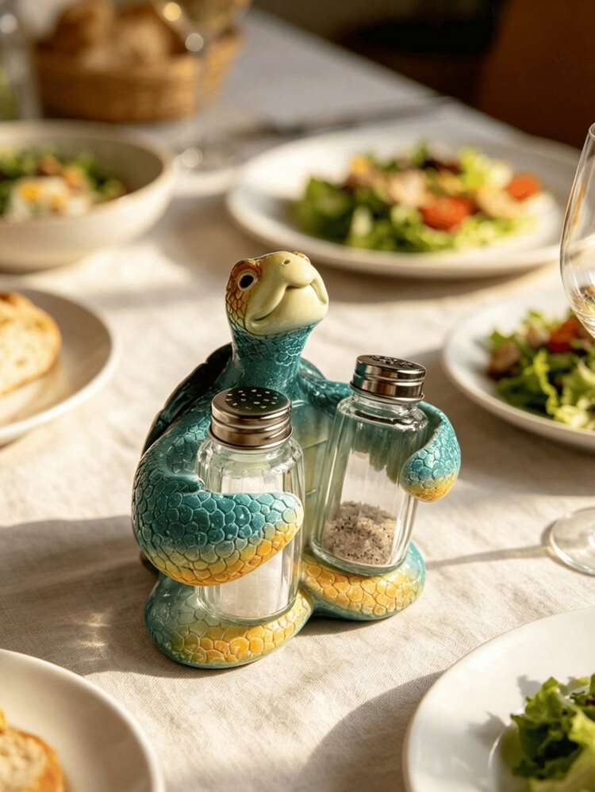

Ana Laura Ribeiro Da Silva
Eu sou a Ana, tenho 16 anos, estou no 2ºdo medio, cursando desenvolvimento de sistemas. Gosto de cozinhar e ler,
e amo muito tartaruga.
Congrego na Igreja Congregacional de Mococa
la sirvo no ministerio infantil, letras, dança e teatro e lider da recepcao.

clique aqui!
Lista de Hobies
- Cozinhar
- Compras
- Pole Dance
- Estar com meus amigos